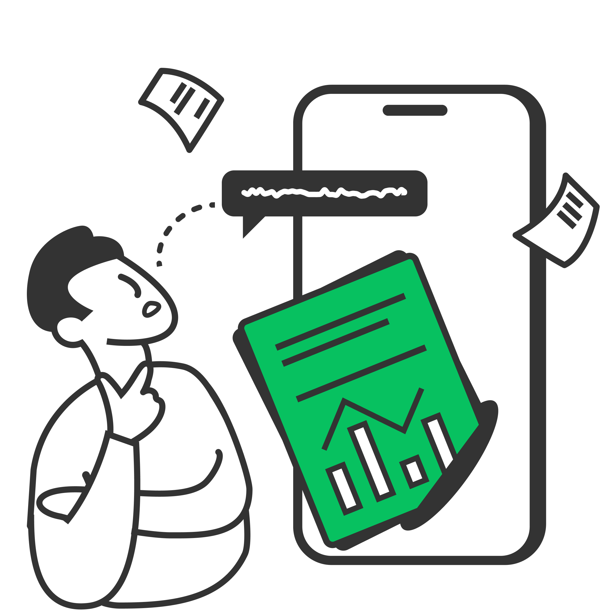
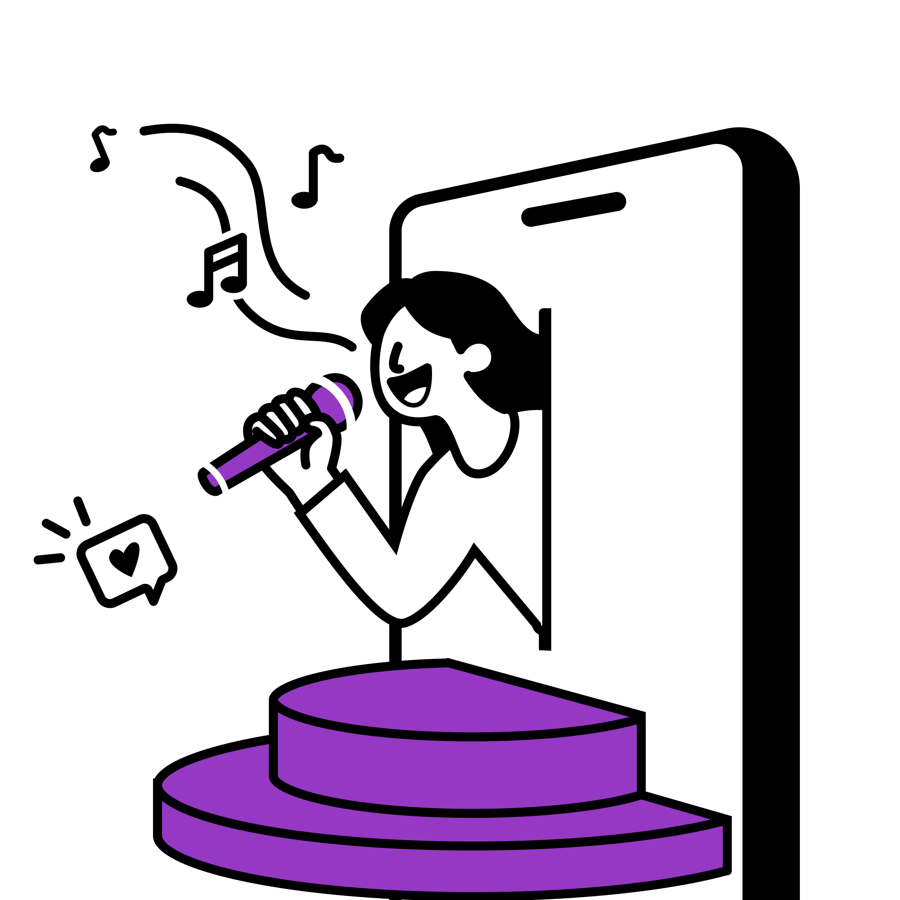
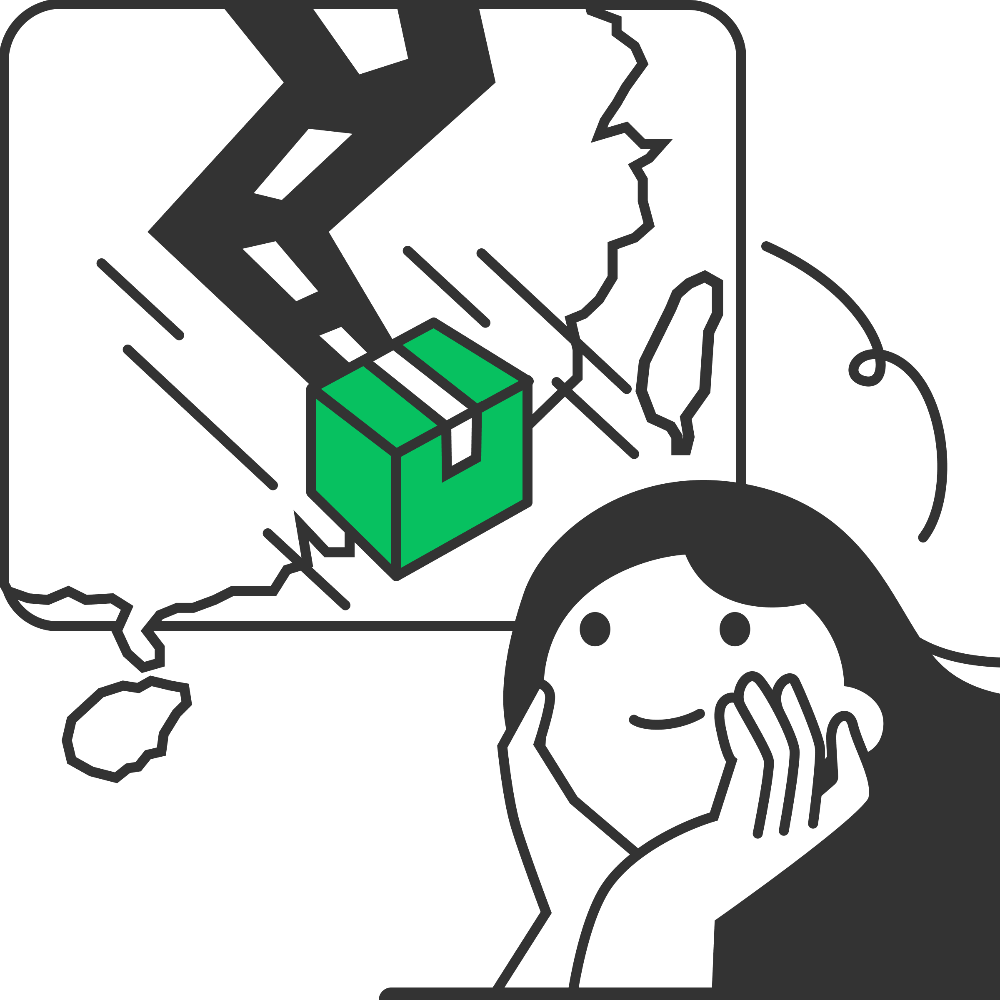

当AI成为研究助理：在国民社交应用中构建透明、可控且值得信赖的Agent UX
应对深度研究的超长耗时、覆盖全年龄段用户和碎片化场景，以抽屉式框架、过程动画、摘要先行的组合策略，让AI研究过程可视、可控

应对深度研究的超长耗时、覆盖全年龄段用户和碎片化场景，以抽屉式框架、过程动画、摘要先行的组合策略，让AI研究过程可视、可控

为多人社交打造的新形态直播间。作为唯一交互设计师，从0到1主导设计，覆盖互动逻辑、点歌引导、开播流程与互动表情，深度参与产品决策与落地。

针对微信小店物流地图样式陈旧、状态模糊、交互卡顿等问题，从视觉样式、状态表达、交互流畅度三方面系统性优化。